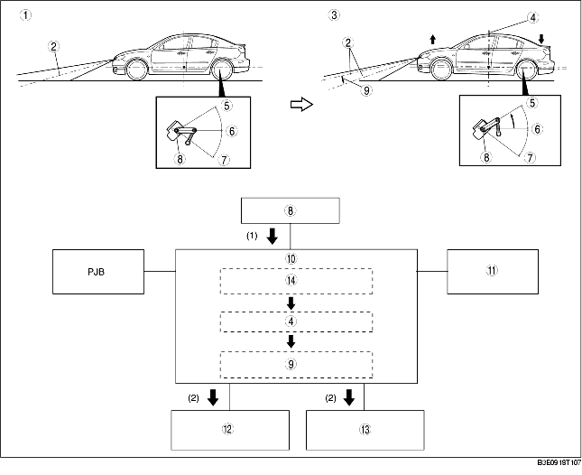

1. According to the fluctuation of the suspension, the auto leveling sensor installed in the rear of the vehicle send a signal to the auto leveling control module.
2. When the signal input from the auto leveling sensor is detected, the auto leveling control module verifies the vehicle attitude, then calculates the amount of optical axis adjustment. The auto leveling control module compares the actual and required positions of the reflector, then inputs a command signal to the headlight leveling actuator.

1. When the auto leveling control module detects the vehicle is moving at a constant vehicle speed between 30-180 km/h for 3 s continuously while the headlights are on, the average value of the vehicle attitude during the period is calculated and the optical axis is adjusted. (The adjustment control is operated only once per each period of driving.)